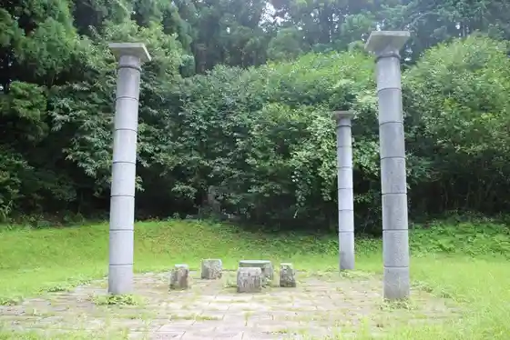
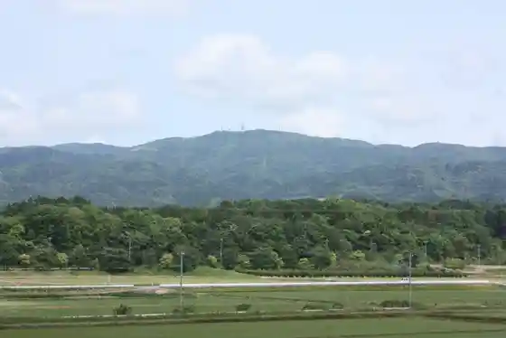
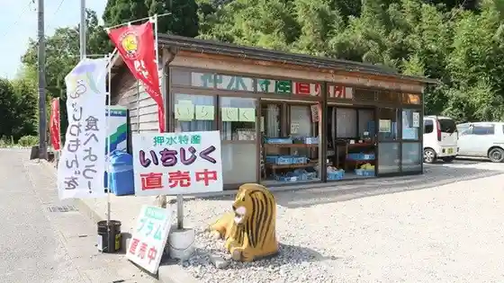
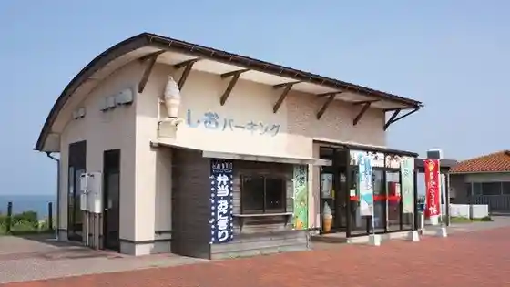

Densetsu no Mori Park (Moze Park)
Hodatsushimizu, Ishikawa · 0767-29-8250 · Official / source link

Takara Tatsuyama
Hodatsushimizu, Ishikawa · 0767-29-8250 · Official / source link

Oshimizu Tokusan Chokubai Tokoro
Hodatsushimizu, Ishikawa · 090-4326-6602 · Official / source link

Shio Parking Area (Nobori Kudari)
Hodatsushimizu, Ishikawa · 0767-29-2929 · Official / source link

Suemori Castle Ruins (Ken Shitei Historic Site)
Hodatsushimizu, Ishikawa · 0767-28-5180 · Official / source link
Takara Toru Kanayama Kozan Ato
Hodatsushimizu, Ishikawa · 0767-28-5180 · Official / source link
Kita Ie (Kuni Shitei Juyo Bunkazai)
Hodatsushimizu, Ishikawa · 0767-28-5180 · Official / source link
Egg Station Tamago no Eki
Hodatsushimizu, Ishikawa · 0767-28-8805 · Official / source link
Takara Tatsuyama Honpo Matsuzuki Do
Hodatsushimizu, Ishikawa · 0767-28-2378 · Official / source link
Imahama Beach
Hodatsushimizu, Ishikawa · 0767-29-8250 · Official / source link
Yama no Ryugujo
Hodatsushimizu, Ishikawa · 0767-29-8250 · Official / source link
Chirihama Nagisa Onsen Sato Yu Chirihama
Hodatsushimizu, Ishikawa · 0767-28-5535 · Official / source link
Takara Yu
Hodatsushimizu, Ishikawa · 0767-28-5550 · Official / source link
Sanden Kanaya Burial Mound (Kokushi Ato Shitei)
Hodatsushimizu, Ishikawa · 0767-28-5180 · Official / source link
Yoshimasa Tera no Kiku Sakura
Hodatsushimizu, Ishikawa · 0767-29-2610 · Official / source link
Takara Toru Kuzu Hall
Hodatsushimizu, Ishikawa · 0767-29-8240 · Official / source link
Ami Budo Sono
Hodatsushimizu, Ishikawa · 0767-29-3016 · Official / source link
Hotel Uerunesu Noto Michi
Hodatsushimizu, Ishikawa · 0767-29-4181 · Official / source link
Sugawara Shrine
Hodatsushimizu, Ishikawa · 0767-29-2453 · Official / source link
Toreja Famu
Hodatsushimizu, Ishikawa · 0767-28-4115 · Official / source link
Usugamine Promenade (Rekishi no Michi Hyakusen)
Hodatsushimizu, Ishikawa · 0767-28-5180 · Official / source link
Kokorozashi Ko Sakura Village Burial Mound Park
Hodatsushimizu, Ishikawa · Official / source link
Okabe Ie (Ken Shitei Yukei Bunkazai)
Hodatsushimizu, Ishikawa · 0767-28-5180 · Official / source link
Obachan no Yado
Hodatsushimizu, Ishikawa · 090-5178-0528 · Official / source link
Joren Tera no Shidarezakura (Machi Shitei Tennenkinembutsu)
Hodatsushimizu, Ishikawa · 0767-29-3407 · Official / source link
Tarumi Taki
Hodatsushimizu, Ishikawa · 0767-29-8250 · Official / source link
Naka Village Tofu Mise
Hodatsushimizu, Ishikawa · 0767-29-3125 · Official / source link
O Kashi Tokoro Menden Kashi Ho
Hodatsushimizu, Ishikawa · 0767-28-3326 · Official / source link
Nakagawa Kashi Ho
Hodatsushimizu, Ishikawa · 0767-29-2039 · Official / source link
Yamachi Shoyu (Chikaoka Ya Shoyu)
Hodatsushimizu, Ishikawa · 0767-28-2001 · Official / source link
Sakamoto Budo Sono
Hodatsushimizu, Ishikawa · 0767-29-3343 · Official / source link
Kuzu Village
Hodatsushimizu, Ishikawa · 0767-28-4255 · Official / source link
O Kashi Tsukasa
Hodatsushimizu, Ishikawa · 0767-29-2112 · Official / source link
Nature Farm Moto Ya
Hodatsushimizu, Ishikawa · 0767-28-5556 · Official / source link
Myoho Wa Tera no Nanten (Ken Shitei Tennenkinembutsu)
Hodatsushimizu, Ishikawa · 0767-28-4780 · Official / source link
Hodatsushimizu Town Hall
Hodatsushimizu, Ishikawa · 0767-29-3111 · Official / source link